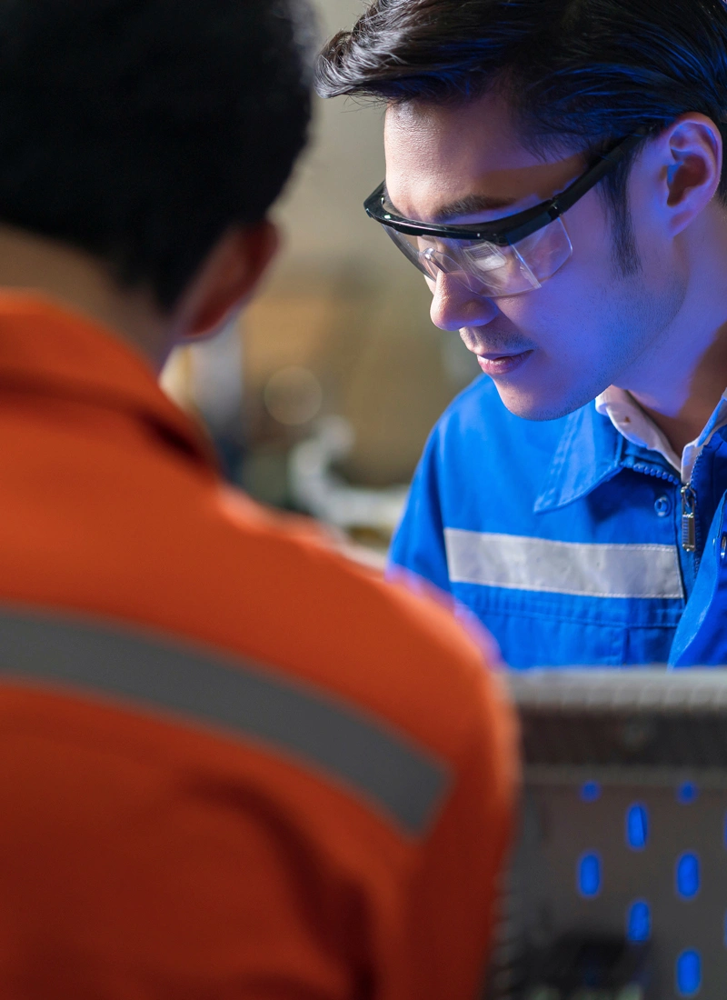

Uplifting PE Company

Hiring Support
Programme
100% funding for talent sourcing by The Talent People to solve hiring needs.
Hiring Transformation Experiential Programme
90% funding to transform hiring with the right Tech platforms & HR best practices to boost retention.
Experiential Learning Journey
Showcase careers via on-site tour / webinar to facilitate bulk hiring.
Bite-size Talks
Free personalised 1 hour session to staff on PE trends & workforce skills enhancement.
Short Courses (PEARL)
Upskill your workforce through SSG funded PEARL courses and boost your workforce’s productivity & performance.
LinkedIn Learn
60% funding to unlock up to 15,000+ online courses for workforce upskilling.
LinkedIn Branding
60% funding to boost digital presence with LinkedIn page, Recruiter access & Job Post.
Workplace Role Badge
Industry-recognition for Employees who drive Workplace learning & Coaching.
Employer Testimonials
By streamlining recruitment and enhancing candidate quality, JSIT-PE’s programme resolved many of our key hiring challenges which positively impacted our operations.
Cragar Industry
JSIT-PE’s programme supported us with comprehensive recruitment services from job posting to interview shortlisting.
Allied MFG
Hiring Support Programme
JSIT PE partners with The Talent People to help PE companies quickly fill urgent manpower needs using their extensive hiring networks and platforms.
A dedicated Account Manager works alongside your HR team to post roles, screen applicants, and shortlist strong candidates. Companies also enjoy premium job postings and regular performance reviews — all100% funded by JSIT‑PE.
Hiring Support Programme
JSIT PE partners with The Talent People to help PE companies quickly fill urgent manpower needs using their extensive hiring networks and platforms.
A dedicated Account Manager works alongside your HR team to post roles, screen applicants, and shortlist strong candidates. Companies also enjoy premium job postings and regular performance reviews — all100% funded by JSIT‑PE.
Bite-Sized Talks
These short lunchtime sessions expose employees to the latest trends in the Precision Engineering sector, including Artificial Intelligence, Industry 4.0, digital transformation, sustainability and more. They are highly customisable to suit your company’s context, making them practical and relevant for field and operations teams.
Sessions run 45–60 minutes and can be conducted on-site or on-line and arefully funded by JSIT‑PE, giving HR a simple, zero‑cost way to spark learning and future‑readiness across the workforce.
Bite-Sized Talks
These short lunchtime sessions expose employees to the latest trends in the Precision Engineering sector, including Artificial Intelligence, Industry 4.0, digital transformation, sustainability and more. They are highly customisable to suit your company’s context, making them practical and relevant for field and operations teams.
Sessions run 45–60 minutes and can be conducted on-site or on-line and arefully funded by JSIT‑PE, giving HR a simple, zero‑cost way to spark learning and future‑readiness across the workforce.
Hiring Transformational Experiential Programme
Empower your HR teams with the skills and digital tools needed to run their own proactive recruitment efforts.
Companies gain access to multiple hiring platforms—including LinkedIn, Indeed, JobStreet and MyCareersFuture—and manage applicants through a consolidated Applicant Tracking System (ATS) dashboard. HR staff also receive industry‑focused training from SPETA to strengthen in‑house hiring capabilities.
The programme is funded by JSIT‑PE at up to 90%, making it a cost‑effective way to modernise and elevate your in‑house hiring strategy.
Hiring Transformational Experiential Programme


Empower your HR teams with the skills and digital tools needed to run their own proactive recruitment efforts.
Companies gain access to multiple hiring platforms—including LinkedIn, Indeed, JobStreet and MyCareersFuture—and manage applicants through a consolidated Applicant Tracking System (ATS) dashboard. HR staff also receive industry‑focused training from SPETA to strengthen in‑house hiring capabilities.
The programme is funded by JSIT‑PE at up to 90%, making it a cost‑effective way to modernise and elevate your in‑house hiring strategy.